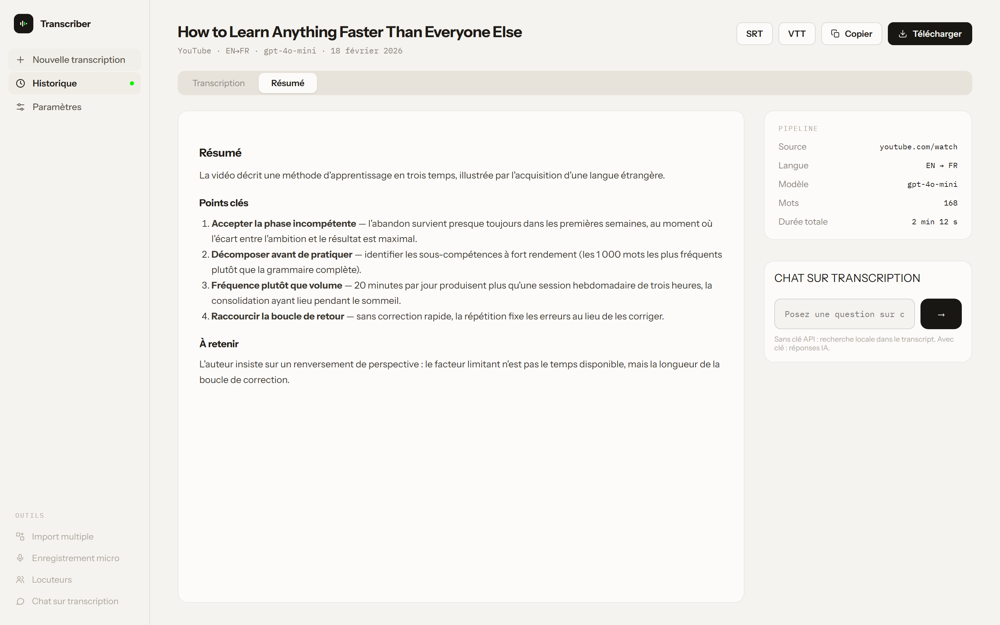
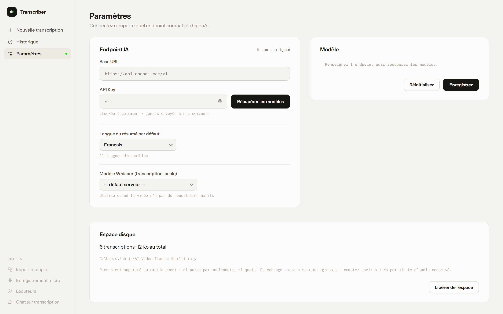

TOUT CE QUE
FAIT LE
LOGICIEL.
Toutes les captures de cette page viennent de l'application réelle, dans sa version installable. Rien n'est redessiné pour la vitrine.
UNE URL, UN FICHIER,
OU VOTRE VOIX.
Collez le lien d'une vidéo ou d'un podcast, déposez un fichier local, ou parlez directement dans le micro. Le même pipeline traite les trois.
Les fichiers acceptés vont du .mp4 au .opus, jusqu'à 200 Mo — et un simple .txt est traité comme une transcription déjà faite, prête à être résumée.


VOUS VOYEZ
CE QUI SE PASSE.
Chaque étape remonte en temps réel par server-sent events : téléchargement, transcription, optimisation, traduction, résumé. Le panneau de droite affiche le journal brut du serveur.
Un badge indique le chemin emprunté — sous-titres natifs quand la plateforme en fournit, Whisper sinon. C'est la différence entre trois secondes et plusieurs minutes.
TROIS ONGLETS,
UN SEUL TRAITEMENT.
Transcription nettoyée, résumé structuré, traduction conditionnelle. Plus la source, gardée à côté.


OPTIMISATION IA
Ponctuation restaurée, phrases complétées, paragraphes reconstruits. Un transcript brut devient un texte lisible.
TRADUCTION CONDITIONNELLE
Déclenchée uniquement si la langue de la source diffère de la langue de résumé demandée. Pas de travail inutile.
VIDÉO ORIGINALE
Téléchargée en parallèle de la transcription, prévisualisée dans la fiche résultat, enregistrable en un clic. Désactivable.
CE QUI SORT
DE LA MACHINE.
Les sous-titres horodatés sont produits dès que le chemin Whisper est emprunté.
SRT
Sous-titres horodatés, pour les logiciels de montage et les lecteurs vidéo.
VTT
Le format sous-titre du web, prêt pour une balise <track>.
TXT
Le texte nu, quand il ne doit surtout rien emporter d'autre.
MD
Markdown avec titres et paragraphes — à coller dans vos notes.

TOUT RESTE,
ET TOUT SE RETROUVE.
Chaque transcription terminée rejoint un historique groupé par jour, semaine ou mois, cherchable au clavier. Rouvrir une entrée restitue la transcription, le résumé, les sous-titres et l'audio d'origine. Chacune peut être renommée ou mise en favori.
Cet historique est conservé sur votre ordinateur, dans un dossier par transcription — et non dans le stockage du navigateur : ni serveur, ni base distante, ni quota qui le vide. Une fois une transcription terminée, sa consultation ne déclenche plus aucun appel réseau ; il se lit entièrement hors ligne, audio compris.
Rien n'est supprimé automatiquement : ni purge par ancienneté, ni rotation. En échange votre historique grossit — comptez environ 1 Mo par minute d'audio conservé, et libérez l'espace quand vous le décidez.
QUATRE OUTILS
DANS LA MÊME FENÊTRE.
CHAT SUR TRANSCRIPTION
Posez une question sur n'importe quelle transcription terminée. Avec une clé API, la réponse est générée par votre modèle en s'appuyant sur le texte. Sans clé, la recherche locale retrouve les passages pertinents.
MICRO LIVE
Parlez, le texte s'écrit. En local via faster-whisper, sans aucune clé — ou via l'API Realtime d'OpenAI si vous en avez une. Utile pour dicter une note ou capter une réunion.
TRADUIRE SANS CLÉ prochaine version
Un modèle de traduction s'installe à la demande depuis les Paramètres, puis travaille sur votre machine. 646 Mo à télécharger une seule fois, et seulement si vous en avez besoin — l'installeur ne grossit pas. Onze langues de destination. La qualité suffit pour comprendre et pour citer ; sur un texte technique ou littéraire, un bon modèle derrière une clé API reste meilleur.
CONTENUS RÉSERVÉS prochaine version
Pour une vidéo qui exige d'être connecté, désignez le navigateur où vous l'êtes déjà : l'application réutilise cette session. Les cookies sont lus localement au moment du téléchargement, ne sont jamais recopiés ailleurs et ne quittent pas votre machine.
IDENTIFICATION DES LOCUTEURS
Les segments peuvent être étiquetés Locuteur 1 / 2 / … via pyannote-audio. Fonction optionnelle : elle s'active avec une variable d'environnement et un jeton Hugging Face.
IMPORT MULTIPLE
Déposez plusieurs fichiers d'un coup : ils forment une file d'attente et sont traités l'un après l'autre, avec un statut par fichier.
VOTRE CLÉ,
VOTRE ENDPOINT.
Le logiciel ne fournit pas de modèle : il se branche sur le vôtre. N'importe quel endpoint compatible OpenAI convient — OpenAI, OpenRouter, vLLM, Ollama, une passerelle interne.
Renseignez l'URL de base et la clé, cliquez sur Récupérer les modèles, choisissez. La clé est stockée localement et n'est jamais envoyée ailleurs qu'à l'endpoint que vous avez indiqué.

EN RÉSUMÉ
| Capacité | Sans clé API | Avec clé API |
|---|---|---|
| Transcription | faster-whisper local | faster-whisper local |
| Sous-titres natifs | oui | oui |
| Optimisation du texte | nettoyage local | modèle de langue |
| Résumé | extractif local — sélectionne des phrases, n'en rédige aucune | 11 langues, structuré |
| Traduction | modèle local, 646 Mo prochaine version | conditionnelle |
| Chat sur transcription | recherche locale — extraits cités | réponses générées |
| Exports SRT / VTT / TXT / MD | oui | oui |
ESSAYEZ-LE
SUR VOTRE MACHINE.